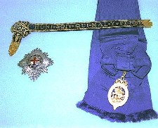
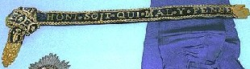

ガーティーズ ガーターと発音する。アメリカ役で、２種類の数牌で１から７迄の連数２組み。
             
「パッと見」には、中国公式麻将でいう連六（レンリュー）が二組のようであるが、それとは少し異なる。
中国公式麻将の連六
            
GertieとはGertrude(ガートルード)という女性名の愛称。Garterは靴下留め。すなわちGertie's Garterは「ガートルード夫人の靴下留め」という意味。
ヘンテコな名称であるが、実はこれはイギリスのガーター勲章を指している。
ガーター勲章は、1348年に制定されたイギリス最古の勲章。制定のいきさつについては諸説あるが、一般に流布しているのは次のようなもの。
イギリス王エドワード三世（AD1327−1377）がガートルード・ソールズベリー伯爵夫人（一説にエドワード三世の恋人と）と宮廷舞踏会で踊っていた。そのとき伯爵夫人のガーターが落ちた。王はすぐさまそれを拾い上げて自分の足にはめ、夫人の失敗をカバーした。そしてそれを機会にガーター勲章を制定したというもの。

燦然と輝く十字模様のメダルは頚飾章（副賞みたいなもの）、ブルーの布地は肩にかけるケープ。そして細長い帯のようなものがガーター勲章。ガーター(靴下止め)なので、ベルト状の布でできており、左脚の膝下につけるのが正式とか。写真を大きくすると、こんな感じ。

地の色が濃紺なのは、そのときの伯爵夫人のガーターの色という。ガーターに縫い取りしてある金文字は「Honni soit qui mal y pense.＝思い邪なる者に恥辱あれ」（仏語）。夫人がガーターを落としたとき、思わず笑った貴族に対してエドワード３世が言った言葉だという。
へぇなるほどであるが、１から７までの異種牌の組み合わせが、なんでガーター勲章という名称になるのか、それはさっぱりわからない....長いベルト状を表しているんかな....
|